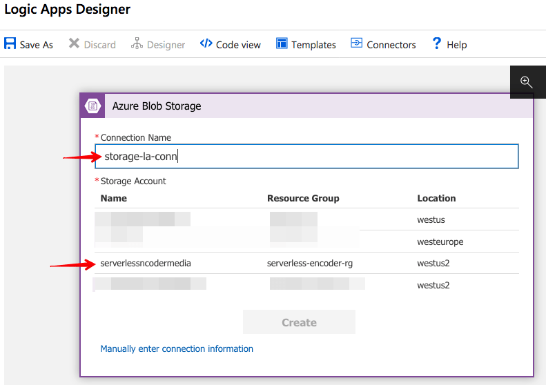
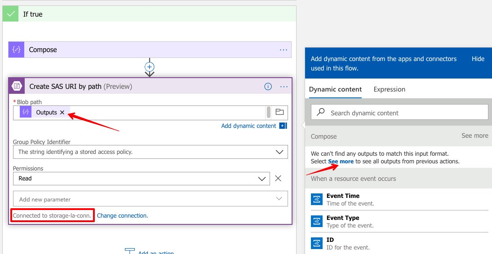

This is a 3-part blog covering how to build a scalable shot-based serverless video encoder in Azure. In Part 1, I explain what AV1 is and where we are in the video encoding space. In part 2, we create a logic app to upload and index the video. In part 3, we’ll need to split the video into its scenes and encode individual scenes. For reference, here are the links to all the parts:
- https://www.singhkays.com/blog/azure-serverless-distributed-video-encoder-av1-part-1/
- https://www.singhkays.com/blog/azure-serverless-distributed-video-encoder-av1-part-2/
- https://www.singhkays.com/blog/azure-serverless-distributed-video-encoder-av1-part-3/
The solution
To implement this solution, we need an algorithm that splits the input video into shots. Fortunately for us, Microsoft Video Indexer supports this scenario. Before getting started we’ll setup Video Indexer in our subscription. For the rest of the steps, here’s a quick overview of what’s going to happen:
- User uploads an MP4 video file to Azure Blob Storage
- Because of the Azure Event Grid integration with Azure Blob Storage, a file upload event triggers a notification
- The event notification is consumed by the first Logic App. The first step in the Logic App is to upload the video to Microsoft Video Indexer service
- Once the video is indexed, we retrieve the video insights and store it in the “insights” Azure File share
- While the video indexing is happening, we also copy the video file from Azure Blob Storage to the “source” Azure File share where it can be accessed by container instances later
- When the indexing is complete, an “Indexing complete” notification is sent to trigger the second Logic App
- In the second Logic App, the first step is to retrieve the video insights saved earlier
- Next, we use an Azure Function to parse the shots data and create our container instance definitions as well as shots encoding commands for each container instance
- Now we can use the Logic App-Container Instance connector to create container instances based on container instance definitions defined in the last step
- As the container instances finish their respective encoding jobs, they save the output video in the “shots” Azure File share
- Next, we trigger another Azure Function to iterate over the output files and create a ffmpeg concat file
- Once we have a concat file, we create another container instance with ffmpeg installed to execute the concat file
- The output of the preview container instance i.e. all the encoded shots files that are combined to one file is saved in the “output” Azure File share
- The user can then download the encoded file from the “output” Azure File share
User Experience
While building this solution, I wanted to keep the user experience simple. Hence a user needs to take only these steps:
- Upload an MP4 video file to a specified Azure Blob Storage Account
- Download the encoded file from the “output” Azure File share
Implementation Details
Setup Microsoft Video Indexer
-
Start by going to https://vi.microsoft.com/en-us/ and logging in with your Azure account
-
Once logged in, click “Create new account”

-
Once you’ve logged into your Azure subscription, fill in the details for the Video Indexer instance you’d like to create.
-
It can take a few minutes for the Video Indexer to connect to your subscription. Once that is done, copy the account id of your new account

-
Now login with your Azure subscription at https://api-portal.videoindexer.ai/developer and copy the Primary or Secondary key
- That’s it! Now Video Indexer instance is all setup in your subscription
Blob upload events
-
Create a storage account. I named mine “serverlessn codermedia”
-
In the storage account, create a container called “media” in the “Blobs” section. This is where the user will upload an .MP4 video file.
-
In the “Files” section, add 4 new file shares
a. insights – we’ll store the insights about indexed video here
b. output – we’ll store the full encoded video here that the user can download
c. shots – we’ll store the individual encoded shots video files here
d. source – we’ll store the user uploaded video file here for access by the container instances -
Once the storage account is created, click the “Events” section of the storage account. In the “Events” section, use the “When a new blob is uploaded” quick start logic app to get started.
-
Next screen shows the Azure Blob Storage and Azure Event Grid connections
-
First create the connection for the storage account you just created 
-
Next, sign into Azure Event Grid with your current Azure subscription. Once you’ve done these steps, you should see the following screen showing green status!
-
Hit continue and you should now land on the Logic Apps designer
-
In the “When a resource event occurs”
a. select Event Type Item ofMicrosoft.Storage.BlobCreated
b. Add two new parameters – “Suffix Filter” with value ".mp4" and “Subscription Name” with value anything you want -
In the “If true” section g. Delete all steps except “Compose”
-
Your Logic App at this point should look like below

-
Save the logic app with whatever name you choose. In this solution, I named it as “video-indexer-logic-app”
Upload video to Microsoft Video Indexer
-
After the “Compose” action, add a “Create SAS URI by path” action
a. For the “Blob path”, choose the “Outputs” from the previous Compose action. You will have to click “See more” to see the output from the Compose action.
b. Make sure you’re connected to the same Azure Blob Storage connection we defined earlier (storage-la-conn in this case)
-
Now add a “Get Account Access Token” action for Video Indexer (V2) connector.
a. The first time you do this, you will need to enter the Video Indexer API Key we copied earlier and enter a name for this Logic App-Video Indexer connection
b. Once the connection is created, select the location you deployed your Video Indexer instance to earlier.
c. Select the account Id we saved earlier
d. Select “Yes” for “Allow Edit” -
Now add a “Upload video and index” step and fill in the following details as shows in the image.
For the Video Name field you can choose any name or make it dynamic using the expression tab to enter split(triggerBody()?[‘subject’], ‘/')?[6]. This splits the input video Uri to just the file name that was uploaded
Copy user video to “source” Azure File share
-
Now we need to copy the source video file to the “source” Azure File share so that our encoding containers instances can access it. For that, add a “Create container group” action and configure it like shown below.
We’re using a small wget container that will download the video from the SAS Uri we generated earlier and then copy it to “source” Azure File Share. Note that we’re using a minimal docker image, therefore we’ll need to use “–no-check-certificate” with wget to download from HTTPS SAS Uri of Azure Blob Storage.
Note that I’m creating this container in a new resource group “encoding-containers-rg” to keep a dedicated resource group for creating container instances.
For the containers field, you can use the following JSON to configure easily
[ { "name": <select output Video Id of “Upload and index” step, "properties": { "image": "inutano/wget", "resources": { "requests": { "cpu": 1, "memoryInGB": 0.5 } }, "command": [ "wget", "--no-check-certificate", "-O", "/aci/source/< enter into expression tab split(triggerBody()?['subject'], '/')?[6] >", <Insert Web Url i.e. SAS Uri we generated earlier> ], "volumeMounts": [ { "mountPath": "/aci/source/", "name": "source", "readOnly": false } ] } } ] -
Next, add an “Until” action to check for the completion of the previous container instance. Before filling in the details of the “Until” action, add a “Delay” and “Get properties of a container group” action like below.
Once this is done, now you can fill in the details of the “Until” action like below. NOTE: there are a few different state variables that show up. Choose the one I highlighted in the image below. Also in the advanced mode make sure the value is following to make sure you’ve selected the correct variable
@equals(body('Get_properties_of_a_container_group')?['properties']?['instanceView']?['state'], 'Succeeded')
-
Now for some cleanup! Let’s add a “Delete container group” action
First logic app created!
At the end of above steps, your first logic app “video-indexer-logic-app” should look like below. I chose to leave the “If false” condition empty. You can setup an email notification for example if you choose to do so.
End of Part 2
This is the end of Part 2. In Part 3, we’ll actually encode the shots and combine the shots into 1 video file.
AV1 resources
- AV1 Resource Central: Videos, Tools, Presentations, Comparisons, Research Papers, Encoders, Decoders
- It’s time to replace GIFs with AV1 video!
Contact
Reach out if you have any questions! Feel free to follow me on
- Twitter - @singhkays
- LinkedIn - https://www.linkedin.com/in/singhkays/